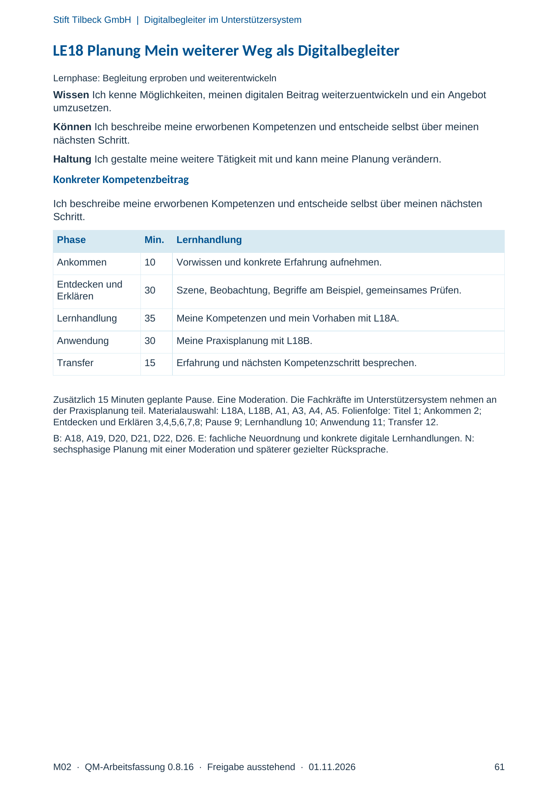
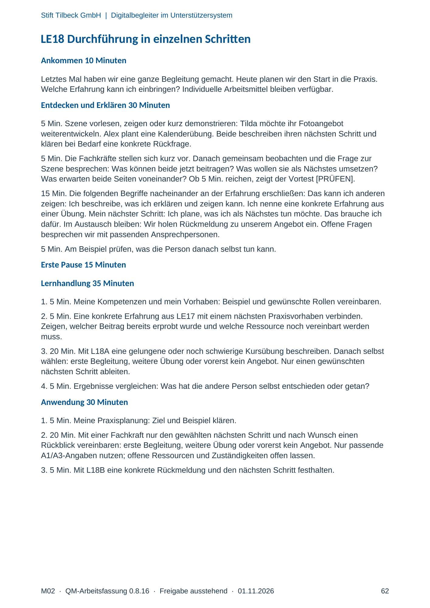
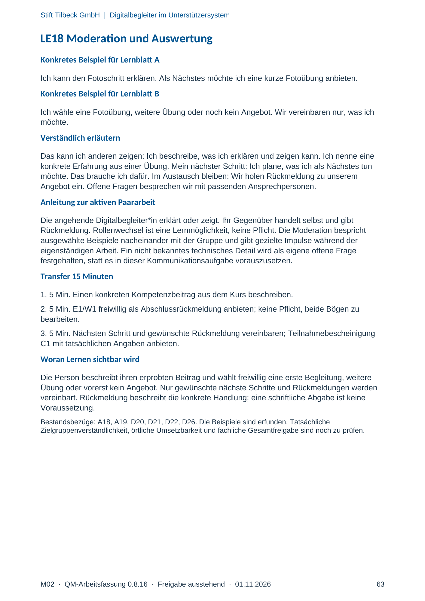

M02 · Originalseite 61, 62, 63
Handbuch und Muster
Gezielte Original-Druckauswahl.
Fragen und Ankreuzfelder werden auf dem Ausdruck bearbeitet. Die Lesefassung speichert keine Antworten.
Lesefassung · Seite 61
Stift Tilbeck GmbH | Digitalbegleiter im Unterstützersystem
LE18 Planung Mein weiterer Weg als Digitalbegleiter
Lernphase: Begleitung erproben und weiterentwickeln
Wissen Ich kenne Möglichkeiten, meinen digitalen Beitrag weiterzuentwickeln und ein Angebot
umzusetzen.
Können Ich beschreibe meine erworbenen Kompetenzen und entscheide selbst über meinen
nächsten Schritt.
Haltung Ich gestalte meine weitere Tätigkeit mit und kann meine Planung verändern.
Konkreter Kompetenzbeitrag
Ich beschreibe meine erworbenen Kompetenzen und entscheide selbst über meinen nächsten
Schritt.
Phase Min. Lernhandlung
Ankommen 10 Vorwissen und konkrete Erfahrung aufnehmen.
Entdecken und
Erklären 30 Szene, Beobachtung, Begriffe am Beispiel, gemeinsames Prüfen.
Lernhandlung 35 Meine Kompetenzen und mein Vorhaben mit L18A.
Anwendung 30 Meine Praxisplanung mit L18B.
Transfer 15 Erfahrung und nächsten Kompetenzschritt besprechen.
Zusätzlich 15 Minuten geplante Pause. Eine Moderation. Die Fachkräfte im Unterstützersystem nehmen an
der Praxisplanung teil. Materialauswahl: L18A, L18B, A1, A3, A4, A5. Folienfolge: Titel 1; Ankommen 2;
Entdecken und Erklären 3,4,5,6,7,8; Pause 9; Lernhandlung 10; Anwendung 11; Transfer 12.
B: A18, A19, D20, D21, D22, D26. E: fachliche Neuordnung und konkrete digitale Lernhandlungen. N:
sechsphasige Planung mit einer Moderation und späterer gezielter Rücksprache.
Originalseite ansehen

Lesefassung · Seite 62
Stift Tilbeck GmbH | Digitalbegleiter im Unterstützersystem
LE18 Durchführung in einzelnen Schritten
Ankommen 10 Minuten
Letztes Mal haben wir eine ganze Begleitung gemacht. Heute planen wir den Start in die Praxis.
Welche Erfahrung kann ich einbringen? Individuelle Arbeitsmittel bleiben verfügbar.
Entdecken und Erklären 30 Minuten
5 Min. Szene vorlesen, zeigen oder kurz demonstrieren: Tilda möchte ihr Fotoangebot
weiterentwickeln. Alex plant eine Kalenderübung. Beide beschreiben ihren nächsten Schritt und
klären bei Bedarf eine konkrete Rückfrage.
5 Min. Die Fachkräfte stellen sich kurz vor. Danach gemeinsam beobachten und die Frage zur
Szene besprechen: Was können beide jetzt beitragen? Was wollen sie als Nächstes umsetzen?
Was erwarten beide Seiten voneinander? Ob 5 Min. reichen, zeigt der Vortest [PRÜFEN].
15 Min. Die folgenden Begriffe nacheinander an der Erfahrung erschließen: Das kann ich anderen
zeigen: Ich beschreibe, was ich erklären und zeigen kann. Ich nenne eine konkrete Erfahrung aus
einer Übung. Mein nächster Schritt: Ich plane, was ich als Nächstes tun möchte. Das brauche ich
dafür. Im Austausch bleiben: Wir holen Rückmeldung zu unserem Angebot ein. Offene Fragen
besprechen wir mit passenden Ansprechpersonen.
5 Min. Am Beispiel prüfen, was die Person danach selbst tun kann.
Erste Pause 15 Minuten
Lernhandlung 35 Minuten
1. 5 Min. Meine Kompetenzen und mein Vorhaben: Beispiel und gewünschte Rollen vereinbaren.
2. 5 Min. Eine konkrete Erfahrung aus LE17 mit einem nächsten Praxisvorhaben verbinden.
Zeigen, welcher Beitrag bereits erprobt wurde und welche Ressource noch vereinbart werden
muss.
3. 20 Min. Mit L18A eine gelungene oder noch schwierige Kursübung beschreiben. Danach selbst
wählen: erste Begleitung, weitere Übung oder vorerst kein Angebot. Nur einen gewünschten
nächsten Schritt ableiten.
4. 5 Min. Ergebnisse vergleichen: Was hat die andere Person selbst entschieden oder getan?
Anwendung 30 Minuten
1. 5 Min. Meine Praxisplanung: Ziel und Beispiel klären.
2. 20 Min. Mit einer Fachkraft nur den gewählten nächsten Schritt und nach Wunsch einen
Rückblick vereinbaren: erste Begleitung, weitere Übung oder vorerst kein Angebot. Nur passende
A1/A3-Angaben nutzen; offene Ressourcen und Zuständigkeiten offen lassen.
3. 5 Min. Mit L18B eine konkrete Rückmeldung und den nächsten Schritt festhalten.
Originalseite ansehen

Lesefassung · Seite 63
Stift Tilbeck GmbH | Digitalbegleiter im Unterstützersystem
LE18 Moderation und Auswertung
Konkretes Beispiel für Lernblatt A
Ich kann den Fotoschritt erklären. Als Nächstes möchte ich eine kurze Fotoübung anbieten.
Konkretes Beispiel für Lernblatt B
Ich wähle eine Fotoübung, weitere Übung oder noch kein Angebot. Wir vereinbaren nur, was ich
möchte.
Verständlich erläutern
Das kann ich anderen zeigen: Ich beschreibe, was ich erklären und zeigen kann. Ich nenne eine
konkrete Erfahrung aus einer Übung. Mein nächster Schritt: Ich plane, was ich als Nächstes tun
möchte. Das brauche ich dafür. Im Austausch bleiben: Wir holen Rückmeldung zu unserem
Angebot ein. Offene Fragen besprechen wir mit passenden Ansprechpersonen.
Anleitung zur aktiven Paararbeit
Die angehende Digitalbegleiter*in erklärt oder zeigt. Ihr Gegenüber handelt selbst und gibt
Rückmeldung. Rollenwechsel ist eine Lernmöglichkeit, keine Pflicht. Die Moderation bespricht
ausgewählte Beispiele nacheinander mit der Gruppe und gibt gezielte Impulse während der
eigenständigen Arbeit. Ein nicht bekanntes technisches Detail wird als eigene offene Frage
festgehalten, statt es in dieser Kommunikationsaufgabe vorauszusetzen.
Transfer 15 Minuten
1. 5 Min. Einen konkreten Kompetenzbeitrag aus dem Kurs beschreiben.
2. 5 Min. E1/W1 freiwillig als Abschlussrückmeldung anbieten; keine Pflicht, beide Bögen zu
bearbeiten.
3. 5 Min. Nächsten Schritt und gewünschte Rückmeldung vereinbaren; Teilnahmebescheinigung
C1 mit tatsächlichen Angaben anbieten.
Woran Lernen sichtbar wird
Die Person beschreibt ihren erprobten Beitrag und wählt freiwillig eine erste Begleitung, weitere
Übung oder vorerst kein Angebot. Nur gewünschte nächste Schritte und Rückmeldungen werden
vereinbart. Rückmeldung beschreibt die konkrete Handlung; eine schriftliche Abgabe ist keine
Voraussetzung.
Bestandsbezüge: A18, A19, D20, D21, D22, D26. Die Beispiele sind erfunden. Tatsächliche
Zielgruppenverständlichkeit, örtliche Umsetzbarkeit und fachliche Gesamtfreigabe sind noch zu prüfen.
Originalseite ansehen
